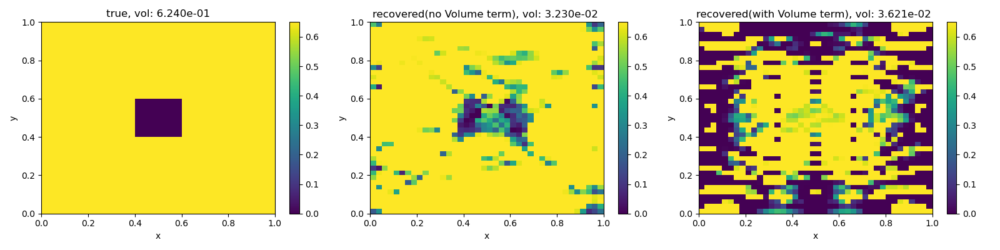

Note
Click here to download the full example code
Straight Ray with Volume Data Misfit Term¶
Based on the SEG abstract Heagy, Cockett and Oldenburg, 2014.
Heagy, L. J., Cockett, A. R., & Oldenburg, D. W. (2014, August 5). Parametrized Inversion Framework for Proppant Volume in a Hydraulically Fractured Reservoir. SEG Technical Program Expanded Abstracts 2014. Society of Exploration Geophysicists. doi:10.1190/segam2014-1639.1
This example is a simple joint inversion that consists of a
data misfit for the tomography problem
data misfit for the volume of the inclusions (uses the effective medium theory mapping)
model regularization

- 
Out:
/usr/share/miniconda/envs/deploy/lib/python3.7/site-packages/discretize/utils/code_utils.py:129: FutureWarning: TensorMesh.vectorCCy has been deprecated, please use TensorMesh.cell_centers_y. It will be removed in version 1.0.0 of discretize.
warnings.warn(message, FutureWarning)
/usr/share/miniconda/envs/deploy/lib/python3.7/site-packages/discretize/utils/code_utils.py:129: FutureWarning: TensorMesh.vectorCCx has been deprecated, please use TensorMesh.cell_centers_x. It will be removed in version 1.0.0 of discretize.
warnings.warn(message, FutureWarning)
/usr/share/miniconda/envs/deploy/lib/python3.7/site-packages/discretize/utils/code_utils.py:129: FutureWarning: TensorMesh.vol has been deprecated, please use TensorMesh.cell_volumes. It will be removed in version 1.0.0 of discretize.
warnings.warn(message, FutureWarning)
True Volume: 0.026000000000000006
/usr/share/miniconda/envs/deploy/lib/python3.7/site-packages/discretize/utils/code_utils.py:157: FutureWarning: TensorMesh.plotImage has been deprecated, please use TensorMesh.plot_image. It will be removed in version 1.0.0 of discretize.
FutureWarning,
/usr/share/miniconda/envs/deploy/lib/python3.7/site-packages/discretize/base/base_mesh.py:1041: FutureWarning: nCx has been deprecated, please access as mesh.shape_cells[0]
FutureWarning,
/usr/share/miniconda/envs/deploy/lib/python3.7/site-packages/discretize/base/base_mesh.py:1061: FutureWarning: nCy has been deprecated, please access as mesh.shape_cells[1]
FutureWarning,
/usr/share/miniconda/envs/deploy/lib/python3.7/site-packages/discretize/utils/code_utils.py:129: FutureWarning: TensorMesh.vectorNx has been deprecated, please use TensorMesh.nodes_x. It will be removed in version 1.0.0 of discretize.
warnings.warn(message, FutureWarning)
/usr/share/miniconda/envs/deploy/lib/python3.7/site-packages/discretize/utils/code_utils.py:129: FutureWarning: TensorMesh.vectorNy has been deprecated, please use TensorMesh.nodes_y. It will be removed in version 1.0.0 of discretize.
warnings.warn(message, FutureWarning)
SimPEG.InvProblem will set Regularization.mref to m0.
SimPEG.InvProblem is setting bfgsH0 to the inverse of the eval2Deriv.
***Done using same Solver and solverOpts as the problem***
/usr/share/miniconda/envs/deploy/lib/python3.7/site-packages/discretize/utils/code_utils.py:129: FutureWarning: TensorMesh.vol has been deprecated, please use TensorMesh.cell_volumes. It will be removed in version 1.0.0 of discretize.
warnings.warn(message, FutureWarning)
/usr/share/miniconda/envs/deploy/lib/python3.7/site-packages/discretize/utils/code_utils.py:129: FutureWarning: TensorMesh.cellGradx has been deprecated, please use TensorMesh.cell_gradient_x. It will be removed in version 1.0.0 of discretize.
warnings.warn(message, FutureWarning)
/usr/share/miniconda/envs/deploy/lib/python3.7/site-packages/discretize/utils/code_utils.py:129: FutureWarning: TensorMesh.cellGrady has been deprecated, please use TensorMesh.cell_gradient_y. It will be removed in version 1.0.0 of discretize.
warnings.warn(message, FutureWarning)
model has any nan: 0
=============================== Projected GNCG ===============================
# beta phi_d phi_m f |proj(x-g)-x| LS Comment
-----------------------------------------------------------------------------
x0 has any nan: 0
0 2.50e-01 6.52e+03 0.00e+00 6.52e+03 3.22e+01 0
/home/vsts/work/1/s/SimPEG/maps.py:998: UserWarning: Maximum number of iterations reached
warnings.warn("Maximum number of iterations reached")
1 2.50e-01 1.10e+03 6.48e-01 1.10e+03 5.26e+00 1
2 2.50e-01 3.85e+02 6.37e-01 3.86e+02 1.07e+01 0
------------------------------------------------------------------
0 : ft = 3.8628e+02 <= alp*descent = 3.8550e+02
1 : maxIterLS = 10 <= iterLS = 10
------------------------- End Linesearch -------------------------
The linesearch got broken. Boo.
Total recovered volume (no vol misfit term in inversion): 0.00011792089185177023
SimPEG.InvProblem is setting bfgsH0 to the inverse of the eval2Deriv.
***Done using same Solver and solver_opts as the Simulation2DIntegral problem***
model has any nan: 0
=============================== Projected GNCG ===============================
# beta phi_d phi_m f |proj(x-g)-x| LS Comment
-----------------------------------------------------------------------------
x0 has any nan: 0
0 2.50e-01 6.55e+03 0.00e+00 6.55e+03 3.10e+01 0
1 2.50e-01 8.47e+02 6.15e-01 8.47e+02 1.37e+01 1
2 2.50e-01 3.86e+02 6.14e-01 3.86e+02 1.65e+01 0
------------------------------------------------------------------
0 : ft = 3.8635e+02 <= alp*descent = 3.8618e+02
1 : maxIterLS = 10 <= iterLS = 10
------------------------- End Linesearch -------------------------
The linesearch got broken. Boo.
Total volume (vol misfit term in inversion): 0.00012051203816475147
/home/vsts/work/1/s/SimPEG/maps.py:998: UserWarning: Maximum number of iterations reached
warnings.warn("Maximum number of iterations reached")
/home/vsts/work/1/s/SimPEG/maps.py:998: UserWarning: Maximum number of iterations reached
warnings.warn("Maximum number of iterations reached")
/usr/share/miniconda/envs/deploy/lib/python3.7/site-packages/discretize/utils/code_utils.py:157: FutureWarning: TensorMesh.plotImage has been deprecated, please use TensorMesh.plot_image. It will be removed in version 1.0.0 of discretize.
FutureWarning,
/usr/share/miniconda/envs/deploy/lib/python3.7/site-packages/discretize/utils/code_utils.py:129: FutureWarning: TensorMesh.vol has been deprecated, please use TensorMesh.cell_volumes. It will be removed in version 1.0.0 of discretize.
warnings.warn(message, FutureWarning)
import numpy as np
import scipy.sparse as sp
import properties
import matplotlib.pyplot as plt
from SimPEG.seismic import straight_ray_tomography as tomo
import discretize
from SimPEG import (
maps,
utils,
regularization,
optimization,
inverse_problem,
inversion,
data_misfit,
directives,
objective_function,
)
class Volume(objective_function.BaseObjectiveFunction):
"""
A regularization on the volume integral of the model
.. math::
\phi_v = \frac{1}{2}|| \int_V m dV - \text{knownVolume} ||^2
"""
knownVolume = properties.Float("known volume", default=0.0, min=0.0)
def __init__(self, mesh, **kwargs):
self.mesh = mesh
super(Volume, self).__init__(**kwargs)
def __call__(self, m):
return 0.5 * (self.estVol(m) - self.knownVolume) ** 2
def estVol(self, m):
return np.inner(self.mesh.vol, m)
def deriv(self, m):
# return (self.mesh.vol * np.inner(self.mesh.vol, m))
return self.mesh.vol * (self.knownVolume - np.inner(self.mesh.vol, m))
def deriv2(self, m, v=None):
if v is not None:
return utils.mkvc(self.mesh.vol * np.inner(self.mesh.vol, v))
else:
# TODO: this is inefficent. It is a fully dense matrix
return sp.csc_matrix(np.outer(self.mesh.vol, self.mesh.vol))
def run(plotIt=True):
nC = 40
de = 1.0
h = np.ones(nC) * de / nC
M = discretize.TensorMesh([h, h])
y = np.linspace(M.vectorCCy[0], M.vectorCCx[-1], int(np.floor(nC / 4)))
rlocs = np.c_[0 * y + M.vectorCCx[-1], y]
rx = tomo.Rx(rlocs)
srcList = [
tomo.Src(location=np.r_[M.vectorCCx[0], yi], receiver_list=[rx]) for yi in y
]
# phi model
phi0 = 0
phi1 = 0.65
phitrue = utils.model_builder.defineBlock(
M.gridCC, [0.4, 0.6], [0.6, 0.4], [phi1, phi0]
)
knownVolume = np.sum(phitrue * M.vol)
print("True Volume: {}".format(knownVolume))
# Set up true conductivity model and plot the model transform
sigma0 = np.exp(1)
sigma1 = 1e4
if plotIt:
fig, ax = plt.subplots(1, 1)
sigmaMapTest = maps.SelfConsistentEffectiveMedium(
nP=1000, sigma0=sigma0, sigma1=sigma1, rel_tol=1e-1, maxIter=150
)
testphis = np.linspace(0.0, 1.0, 1000)
sigetest = sigmaMapTest * testphis
ax.semilogy(testphis, sigetest)
ax.set_title("Model Transform")
ax.set_xlabel("$\\varphi$")
ax.set_ylabel("$\sigma$")
sigmaMap = maps.SelfConsistentEffectiveMedium(M, sigma0=sigma0, sigma1=sigma1)
# scale the slowness so it is on a ~linear scale
slownessMap = maps.LogMap(M) * sigmaMap
# set up the true sig model and log model dobs
sigtrue = sigmaMap * phitrue
# modt = Model.BaseModel(M);
slownesstrue = slownessMap * phitrue # true model (m = log(sigma))
# set up the problem and survey
survey = tomo.Survey(srcList)
problem = tomo.Simulation(M, survey=survey, slownessMap=slownessMap)
if plotIt:
fig, ax = plt.subplots(1, 1)
cb = plt.colorbar(M.plotImage(phitrue, ax=ax)[0], ax=ax)
survey.plot(ax=ax)
cb.set_label("$\\varphi$")
# get observed data
data = problem.make_synthetic_data(phitrue, relative_error=0.03, add_noise=True)
dpred = problem.dpred(np.zeros(M.nC))
# objective function pieces
reg = regularization.Tikhonov(M)
dmis = data_misfit.L2DataMisfit(simulation=problem, data=data)
dmisVol = Volume(mesh=M, knownVolume=knownVolume)
beta = 0.25
maxIter = 15
# without the volume regularization
opt = optimization.ProjectedGNCG(maxIter=maxIter, lower=0.0, upper=1.0)
opt.remember("xc")
invProb = inverse_problem.BaseInvProblem(dmis, reg, opt, beta=beta)
inv = inversion.BaseInversion(invProb)
mopt1 = inv.run(np.zeros(M.nC) + 1e-16)
print(
"\nTotal recovered volume (no vol misfit term in inversion): "
"{}".format(dmisVol(mopt1))
)
# with the volume regularization
vol_multiplier = 9e4
reg2 = reg
dmis2 = dmis + vol_multiplier * dmisVol
opt2 = optimization.ProjectedGNCG(maxIter=maxIter, lower=0.0, upper=1.0)
opt2.remember("xc")
invProb2 = inverse_problem.BaseInvProblem(dmis2, reg2, opt2, beta=beta)
inv2 = inversion.BaseInversion(invProb2)
mopt2 = inv2.run(np.zeros(M.nC) + 1e-16)
print("\nTotal volume (vol misfit term in inversion): {}".format(dmisVol(mopt2)))
# plot results
if plotIt:
fig, ax = plt.subplots(1, 1)
ax.plot(data.dobs)
ax.plot(dpred)
ax.plot(problem.dpred(mopt1), "o")
ax.plot(problem.dpred(mopt2), "s")
ax.legend(["dobs", "dpred0", "dpred w/o Vol", "dpred with Vol"])
fig, ax = plt.subplots(1, 3, figsize=(16, 4))
im0 = M.plotImage(phitrue, ax=ax[0])[0]
im1 = M.plotImage(mopt1, ax=ax[1])[0]
im2 = M.plotImage(mopt2, ax=ax[2])[0]
for im in [im0, im1, im2]:
im.set_clim([0.0, phi1])
plt.colorbar(im0, ax=ax[0])
plt.colorbar(im1, ax=ax[1])
plt.colorbar(im2, ax=ax[2])
ax[0].set_title("true, vol: {:1.3e}".format(knownVolume))
ax[1].set_title(
"recovered(no Volume term), vol: {:1.3e} ".format(dmisVol(mopt1))
)
ax[2].set_title(
"recovered(with Volume term), vol: {:1.3e} ".format(dmisVol(mopt2))
)
plt.tight_layout()
if __name__ == "__main__":
run()
plt.show()
Total running time of the script: ( 0 minutes 24.685 seconds)
Estimated memory usage: 9 MB